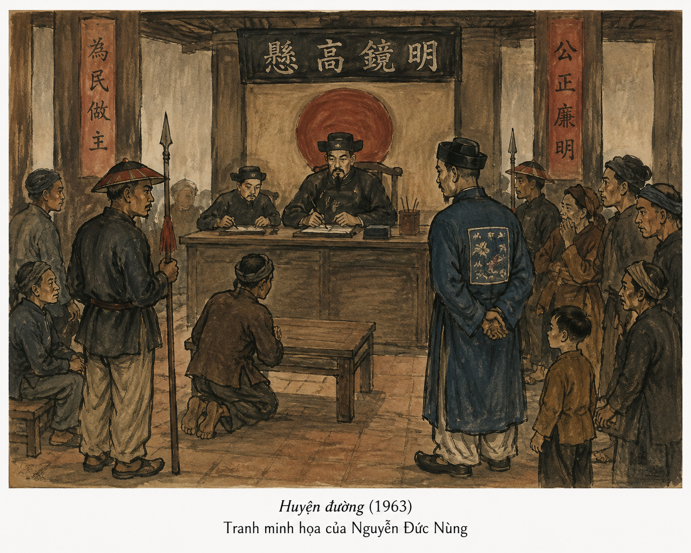
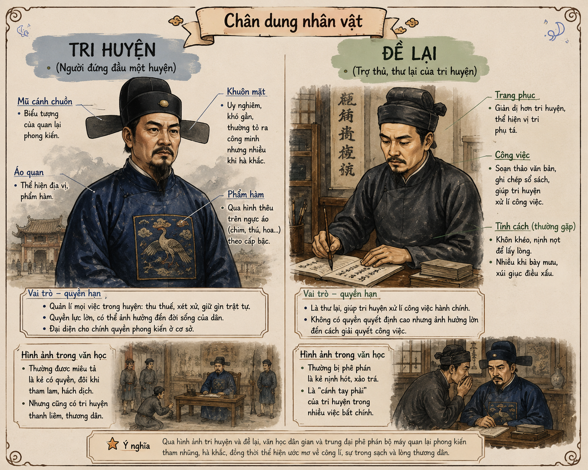

• Khi nghe cụm từ "con rối", điều đầu tiên bạn nghĩ tới là gì? Vì sao như vậy?
• Bạn đã có những hiểu biết gì về rối nước? Hãy nêu những điều bạn còn thắc mắc và muốn tìm hiểu sâu thêm về loại hình nghệ thuật này.
ĐOẠN SA-PÔ CỦA VĂN BẢN THÔNG TIN
Văn bản 3Đoạn chữ in đậm trên là sa-pô của văn bản. Hãy nhớ lại các chức năng thông thường của một sa-pô?

Hình 1: Không gian biểu diễn rối nước dân gian truyền thống (File: h1.png)
I NGUỒN GỐC VÀ BỐI CẢNH LỊCH SỬ CỦA MÚA RỐI NƯỚC
Sự ra đời gắn liền với nền văn minh lúa nước
Hiếm người biết chính xác múa rối nước ra đời từ bao giờ, bởi nó bắt đầu nảy mầm, len lỏi trong lòng các xóm làng chiêm trũng rồi lớn dần lên giữa những sinh hoạt nhỏ bé đời thường. Tương truyền, múa rối nước được hình thành từ thế kỷ XI – XII (thời nhà Lý).
Múa rối nước vốn thường được biểu diễn trong các buổi hội làng hay các dịp lễ Tết, khi bà con nông dân đã thu xếp xong việc đồng áng để cùng ra đình góp vui.
Trò rối nước ở Việt Nam ra đời từ bao giờ?
Sự dịch chuyển không gian biểu diễn từ xưa đến nay
Theo thời gian, múa rối nước ngày càng trở nên phổ biến và hoàn thiện thông qua những đúc kết kinh nghiệm của nhiều thế hệ nghệ nhân.
Sau này, rối vào thành phố, rối vào nhà hát. Diễn viên vẫn là rối gỗ, sân khấu vẫn là mặt nước, người điều khiển vẫn đứng sau bức mành, nhưng không khí và quy mô của nó đã có nhiều điểm thay đổi thích ứng với thời đại mới.
II NGHỆ THUẬT TẠO HÌNH VÀ KỸ THUẬT DIỄN XƯỚNG
Không gian Thủy đình và Hệ thống Sào - Dây
Nghệ thuật múa rối là sự kết hợp độc đáo giữa nghệ thuật tạo hình và kỹ thuật biểu diễn.
Sân khấu múa rối nước là nhà rối (thủy đình) được dựng trên mặt ao làng với kiến trúc mái chùa cong, mành tre, cờ phướn, võng lọng... Thời nay, thủy đình được dựng trong các nhà hát hoặc khu du lịch sinh thái với hồ nhân tạo.
Khác với rối cạn (rối tay, rối que, rối dây), người điều khiển rối nước đứng đằng sau bức mành (buồng trò), sử dụng hệ thống sào kết hợp với dây dầm mình dưới nước để điều khiển rối.
Hãy chỉ ra nét đặc trưng độc đáo nhất của không gian biểu diễn rối nước?

Thủy đình & buồng trò rối nước (h2.png)Chế tác hình nhân và Yếu tố Âm thanh - Ánh sáng
Con rối được đẽo gọt từ gỗ sung – loại gỗ nhẹ, xốp và nổi tốt trên nước. Rối được tạo hình ngộ nghĩnh, sơn màu sắc rực rỡ, tươi vui, mang phong cách dân dã.
Phần thân trên của rối nổi trên mặt nước để biểu diễn, phần chân chìm dưới nước được gắn đế giữ thăng bằng và lắp bộ cơ cấu điều khiển.
Âm thanh và ánh sáng giữ vai trò đặc biệt quan trọng: rối nước cần tiếng đàn, tiếng hát, tiếng trống mõ, kèn sáo và cả tiếng pháo nổ phụ trợ để làm nên sự sống động cho tiết mục.
Trong trò rối nước, con rối đã được chế tác và điều khiển như thế nào?
III MÚA RỐI NƯỚC TRONG THỜI ĐẠI 4.0 & BẢO TỒN Heritage
| Tiêu chí so sánh | Múa rối nước Dân gian (Xưa) | Múa rối nước Hiện đại (Nay) |
|---|---|---|
| Không gian diễn xướng | Ao làng, trước sân đình chiêm trũng | Nhà hát đô thị, hồ nhân tạo, khu du lịch |
| Môi trường thưởng thức | Ngoài trời, gió tự nhiên, dân làng vây quanh | Khán phòng máy lạnh, ghế ngồi thẳng hàng |
| Đối tượng khán giả | Nông dân, bà con làng xã | Khách du lịch quốc tế, học sinh, công chúng đa dạng |
| Nhiệm vụ trọng tâm | Giải trí sau vụ mùa, gắn kết cộng đồng | Bảo tồn di sản, sáng tạo nghệ thuật, quảng bá văn hóa |
Việc bảo tồn, phát triển rối nước có điểm gì chung với việc bảo tồn, phát triển các loại hình nghệ thuật cổ truyền khác của dân tộc?
GIÁ TRỊ VĂN HÓA VÀ THẨM MỸ NỔI BẬT
- Múa rối nước là sự sáng tạo độc nhất vô nhị của cư dân nông nghiệp lúa nước sông Hồng, biến yếu tố nước vốn quen thuộc thành môi trường nghệ thuật biến hóa kỳ diệu.
- Phản ánh chân thực cuộc sống lao động, tâm hồn hồn nhiên, tinh thần lạc quan và trí tuệ dân gian Việt Nam qua hàng trăm năm lịch sử.
IV KHÔNG GIAN BỔ SUNG VĂN HÓA RỐI NƯỚC
em có biết
Thủy đình lâu đời nhất còn tồn tại đến nay là Thủy đình Chùa Thầy (Quốc Oai, Hà Nội) được xây dựng từ thời nhà Lý nằm giữa hồ Long Trì, nơi diễn ra các trò rối nước nổi tiếng gắn liền với huyền thoại Thiền sư Từ Đạo Hạnh.
em có thể
Hãy thử thiết kế mô hình con rối Chú Tễu đơn giản bằng vật liệu nhẹ (xốp, gỗ ép) hoặc cùng nhóm bạn dàn dựng một tiểu phẩm rối cạn/rối bóng ngắn mô phỏng trò chơi dân gian để cảm nhận sự kỳ diệu của điều khiển hình nhân.
LƯU Ý
Khi đọc hiểu văn bản thông tin "Múa rối nước hiện đại soi bóng tiền nhân", cần phân biệt rõ giữa thông tin thực tế khách quan (lịch sử, cách vận hành) và các ý kiến trăn trở, kì vọng phát triển nghệ thuật của tác giả.

Hình 3: Chú Tễu - Nhân vật mở màn quen thuộc trong rối nước (File: h3.png)
V TRẢ LỜI CÂU HỎI BÀI HỌC (SGK TRANG 139)
Câu 1: Tóm tắt những thông tin chính của văn bản.
Câu 2: Tìm trong văn bản những thông tin cho phép khẳng định múa rối nước là "môn nghệ thuật truyền thống thấm đẫm tinh thần Việt".
Câu 3: Nêu đặc điểm của cách triển khai thông tin trong văn bản. Hãy phân tích mức độ thuyết phục của cách triển khai ấy.
Câu 4: Nêu nhận xét về phần sa-pô của văn bản, từ đó rút ra cách viết sa-pô cho một văn bản thông tin nói chung.
Câu 5: Nếu được phép bổ sung vào văn bản những thông tin về các câu chuyện được kể trên sân khấu rối nước, bạn có thể nói điều gì?
Câu 6: Từ văn bản được học, hãy nêu cảm xúc, suy nghĩ của bạn về rối nước nói riêng và nghệ thuật cổ truyền của dân tộc nói chung.
Kết nối đọc – viết: Viết đoạn văn (khoảng 150 chữ) về chủ đề "Múa rối nước – món quà kỳ diệu từ đồng ruộng Việt Nam".
AI LÀ TRIỆU PHÚ: MÚA RỐI NƯỚC
Thử thách 10 câu hỏi để khám phá di sản nghệ thuật rối nước Việt Nam!
VII BÀI TẬP TỰ LUẬN VẬN DỤNG & TÍNH TOÁN NGHỆ THUẬT
Bài 1: Phân tích vai trò của mặt nước và yếu tố âm thanh/ánh sáng trong việc biến những hình nhân gỗ vô tri thành nhân vật nghệ thuật sinh động.
Yêu cầu: Nêu ít nhất 2 chức năng của mặt nước đối với sân khấu rối nước.
Lời giải chi tiết:
1. Vai trò của mặt nước: Làm giấu đi hệ thống dây sào điều khiển và nghệ nhân dầm mình dưới nước; đồng thời đóng vai trò là phông nền phản chiếu ánh sáng, sóng nước lung linh tạo chuyển động tự nhiên cho con rối.
2. Vai trò âm thanh & ánh sáng: Tiếng trống mõ, pháo nổ và lời ca chèo giúp thổi hồn cảm xúc, định hình tính cách nhân vật (vui tươi, gay cấn hay hóm hỉnh), biến khối gỗ sung thành hình nhân sống động.
Bài 2 (Tính toán thời lượng biểu diễn & Hiệu suất): Một buổi diễn múa rối nước trọn vẹn kéo dài tổng cộng \( T = 45 \) phút gồm 12 trò diễn ngắn liên tiếp.
Biết rằng thời gian nghỉ gián đoạn giữa 2 trò diễn kế tiếp để chuẩn bị rối là \( t_{nghi} = 1.5 \) phút. Hãy tính thời lượng trung bình \( t_{tro} \) của mỗi trò diễn chính thức và tính tỷ lệ phần trăm thời gian biểu diễn thực tế \( H \) trên tổng thời lượng chương trình.
Lời giải chi tiết:
• Số khoảng nghỉ giữa 12 trò diễn là: \( n_{nghi} = 12 - 1 = 11 \) (khoảng nghỉ).
• Tổng thời gian nghỉ chuẩn bị là: \( T_{nghi} = 11 \times 1.5 = 16.5 \) phút.
• Tổng thời gian biểu diễn thực tế của 12 trò là: \( T_{thuc} = T - T_{nghi} = 45 - 16.5 = 28.5 \) phút.
• Thời lượng trung bình của mỗi trò diễn là: \( t_{tro} = \frac{28.5}{12} = 2.375 \) phút (tương đương 2 phút 22.5 giây).
• Tỷ lệ thời gian biểu diễn thực tế đạt: \( H = \frac{T_{thuc}}{T} \times 100\% = \frac{28.5}{45} \times 100\% = 63.33\% \).
Bài 3: Đề xuất 3 giải pháp thiết thực nhằm thu hút học sinh THPT quan tâm hơn tới nghệ thuật múa rối nước trong thời đại kỹ thuật số.
Nêu ngắn gọn giải pháp truyền thông, trải nghiệm thực tế và ứng dụng công nghệ.
Lời giải chi tiết:
1. Giải pháp 1 (Trải nghiệm): Tổ chức các workshop ngoại khóa cho học sinh trực tiếp thử điều khiển con rối nước và làm con rối từ vật liệu tái chế.
2. Giải pháp 2 (Truyền thông số): Xây dựng các video ngắn (TikTok/Reels) góc nhìn hậu trường buồng trò vầy nước sinh động của nghệ nhân.
3. Giải pháp 3 (Nội dung mới): Phối hợp biên soạn kịch bản rối nước dựa trên các tác phẩm văn học học đường hoặc truyện cổ tích quen thuộc.